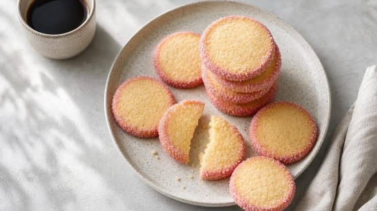

Brysselkex

175°C. Total baktid 2 timmar varav en timme i kylen. Blir ungefär 40 kakor.
Recept:
- 200 gram smör
- 4 1/2 dl vetemjöl
- 1 dl strösocker
- 1 tsk vaniljsocker
- Garnering: 1 tsk röd karamellfärg och 1 dl strösocker
Instruktioner:
- Blanda alla ingredienser till en jämn deg.
- Gör två avlånga rullar av degen på ungefär 5 cm i diameter
och rulla dessa i strösocker blandat med karamellfärg.
- Rulla in deglängderna i plastfolie.
- Lägg rullarna i kylen tills de stelnat. (Cirka 1 timme).
- Ta ut deglängderna och skär dem i skivor på cirka 1 cm.
- Lägg kakorna på en plåt med bakplåtspapper och sätt på ugnen på 175°C.
- Grädda kakorna mitt i ugnen i cirka 10 minuter.
Till startsidan
Timer
10:00